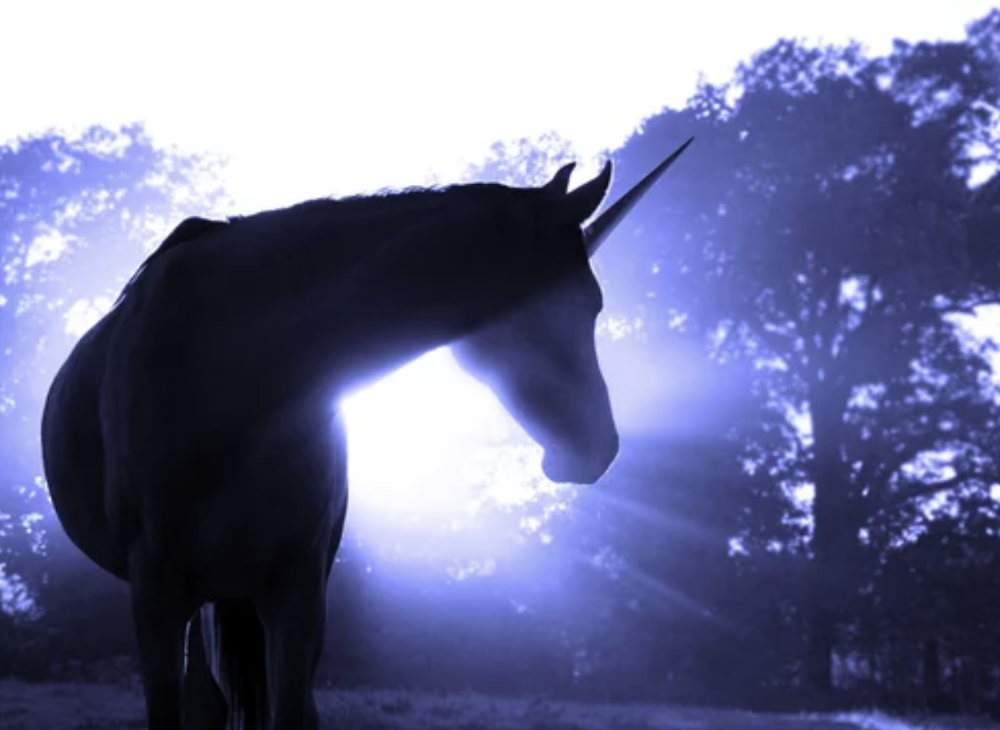

 4월 9일은 전 세계적으로 유니콘의 상징성과 아름다움을 기념하는 '국제 유니콘의 날'이다. 2015년 처음 제정된 이 날은 마법과 순수함, 기쁨을 상징하는 유니콘의 가치를 되새기기 위해 만들어졌다. 유니콘은 고대부터 동서양 신화에 등장하며 꿈과 희망의 존재로 사랑받아 왔다. 이날을 맞아 세계 곳곳에서는 유니콘을 주제로 한 퍼레이드나 소셜 미디어 캠페인이 열리고, 유니콘 굿즈나 디저트를 즐기며 각자의 방식으로 축하하는 문화가 형성되었다. 특히 이 날은 바쁜 일상 속에서도 잠시 동심과 상상력을 되찾자는 의미를 담고 있다. ‘국제 유니콘의 날’은 이제 하나의 놀이를 넘어, 모두가 작은 기적을 믿어보는 따뜻한 날로 자리 잡아가고 있으며, 이처럼 상상과 환상을 주제로 한 특별한 기념일들은 전 세계 곳곳에서 다양한 형태로 이어지고 있다.